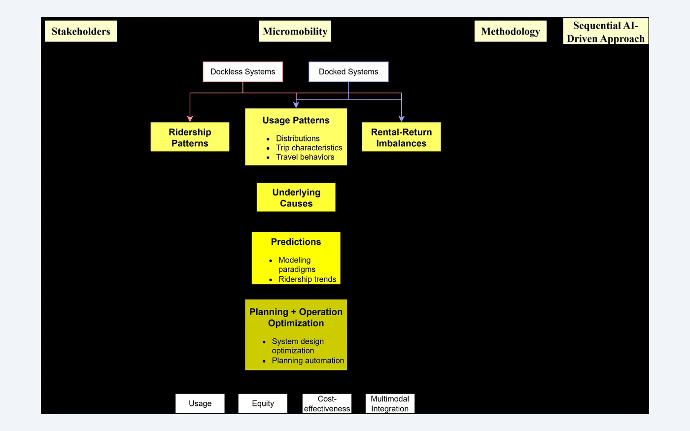
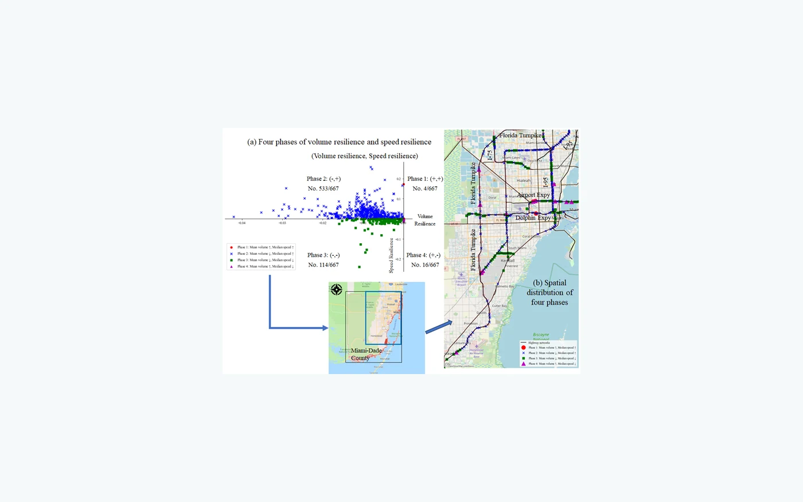
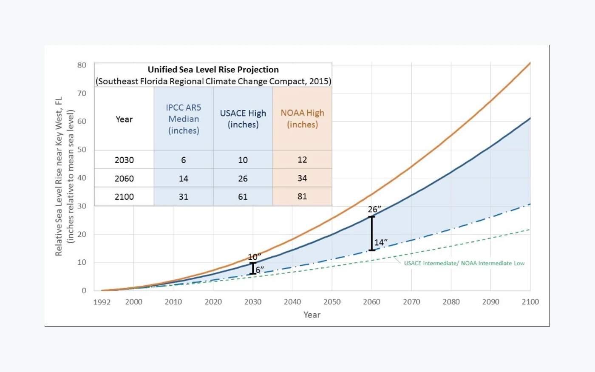
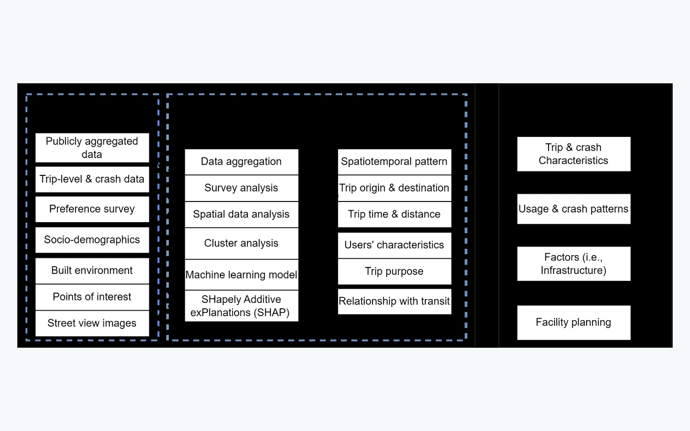
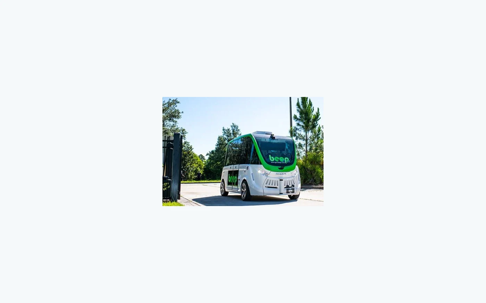

01AI
Transportation AI & Automation
Machine learning, graph learning, reinforcement learning, and human-AI collaboration for transportation planning, prediction, design, and decision support.
Transportation engineering × artificial intelligence × geospatial science
I am Kaifa Lu, Ph.D., a researcher developing data-driven methods for smart mobility, multimodal transportation, climate resilience, disaster recovery, and housing—connecting AI with real-world planning and engineering decisions.
My work sits at the intersection of transportation engineering, urban planning, artificial intelligence, and geospatial data science.
At CECREH, I develop GIS-based dashboards for disaster-recovery programs and housing data, apply SEM, NLP, and large language models to recovery-program performance, and assess climate risks to support resilient and equitable decision-making.
My doctoral research at the University of Florida focused on AI-driven optimization and automation of shared micromobility planning and operation, supported by complementary training in electrical and computer engineering and transportation engineering.
My research links methods, systems, and policy questions across transportation and resilient communities.
Machine learning, graph learning, reinforcement learning, and human-AI collaboration for transportation planning, prediction, design, and decision support.
Shared micromobility, public transit integration, autonomous mobility, travel behavior, demand modeling, and data-driven mobility system evaluation.
Network disruption and recovery, extreme-weather impacts, climate risk, housing exposure, and resilient planning using geospatial and predictive analytics.
GIS dashboards, spatial analytics, mobile sensing, environmental monitoring, digital-twin concepts, and integrated urban data systems.

Integrating spatial data analysis, machine learning, graph neural networks, and multi-agent deep reinforcement learning to understand demand, predict ridership, and automate system design across usage, equity, cost, and multimodal integration objectives.

Spatiotemporal characterization and prediction of network disruption and recovery under extreme-weather events.

Integrating climate projections, social vulnerability, housing exposure, and recovery-program information for resilient planning.

Survey analysis, spatial analytics, and machine learning for usage, mode choice, crash patterns, and public-transit synergies.

A multidimensional evaluation of policy, infrastructure, technology, service, finance, ridership, and community impacts.
Recent work spans transportation AI, multimodal mobility, resilience, housing, and environmental systems. The full publication record is available in my CV.
Peng, Z., Lu, K., Liu, Y., Hou, Q., Zhang, Q. · Journal of the American Planning Association
Lu, K., Liu, Y., Peng, Z., Zhai, W. · Applied Geography, 186, 103820
Popoola, T., Andrews, J., Lu, K., Hayhoe, K., Nejat, A. · Urban Climate, 68, 103029
Yang, X., Lu, K., Li, X. · International Journal of Disaster Risk Reduction, 137, 106097
Lu, K., Liu, Y., Peng, Z. · Journal of Transport Geography, 128, 104356
Lu, K., Liu, Y., Peng, Z. · Cities, 162, 105967
Miao, C., Peng, Z., Cui, A., He, X., Chen, F., Lu, K., et al. · Atmospheric Pollution Research, 15(3), 102015
Lu, K., Peng, Z. · Science of the Total Environment, 858, 159902
Lu, K., Hou, Q., Zhang, Q., Liu, Y., Peng, Z. · Nature Computational Science
Lu, K., Hou, Q., Popoola, T., Hayhoe, K., Andrews, J., Nejat, A. · Urban Climate
Research training and practice across engineering, planning, data science, and resilient communities.
CECREH · Texas Tech University
GIS dashboards for disaster recovery and housing; SEM, NLP, and LLM analysis of recovery-program performance; climate-risk assessment and resilient decision support.
University of Florida
AI-driven optimization and automation of shared micromobility system planning and operation.
University of Florida
Micromobility analytics, transit economic-impact assessment, transportation revenue modeling, and AV-based microtransit implementation.
University of Florida · GPA 3.90/4.00
Dissertation: AI-Driven Approach to Optimize and Automate Shared Micromobility System Planning and OperationUniversity of Florida · GPA 3.89/4.00
Shanghai Jiao Tong University · GPA 3.83/4.00
Central South University · GPA 92.40/100.00
Selected activities from my current curriculum vitae.
Mentoring experience with doctoral and graduate researchers at Texas Tech University, the University of Florida, and Shanghai Jiao Tong University.
Reviewer for planning, transportation, environment, and interdisciplinary journals including JAPA, JPER, Transportation Research Part D, Travel Behaviour and Society, and Scientific Reports.
Best Presentation / Research Award · AI and Cities Forum
WRS Infrastructure & Environment Inc. Award · University of Florida
Merit Commendation · Ph.D. Research Poster
Outstanding Graduates of Shanghai
I welcome research conversations and interdisciplinary collaborations connecting transportation, data science, climate adaptation, housing, and planning.